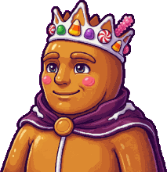

Lady Noxia has been found out, and the village voted her mayor. The Gingerbread Zombie King is coming.
The town. Tap an empty plot to build: cottages for villagers, a windmill and a sugarbeet patch for flour and sugar, a bakery to turn them into gold and hope, a quarry for stone. Buildings need villagers to work them, and villagers come when there is room and hope. Assign your staff to buildings to speed them up.
The countdown. Each phase gives you a few days before the next invasion. The 🛡️ Siege panel lists what the town should have ready: wall, watchtowers, adventurers, the bake. Meet it all and the wall gets a bonus.
The siege. You command the wall on the left. Tap or drag on the field (or ← → and Space) to throw doilies. Towers and adventurers fight on their own; your staff's abilities are the round buttons. Beaten enemies curl up and nap. Hold out and you win more days; lose and the wave comes back in three, a little weaker.
The Grand Bake. Build the Great Oven and keep it lit. Each ingredient from a quest lets it bake another quarter. Finish it before the King arrives…
| Space / tap | Throw a doily (hold to keep throwing) |
| ← → / A D | Aim |
| 1 – 4 | Staff abilities |
| Q | The Queen, when she's ready |
| P / Esc | Menu |
A sequel to Doom & Doilies, with the same household: Lady Noxia, Lord Vellum, Pip, Madame Silkwhistle, Grizelda, Gerald and Wick.
Art generated with fal (nano-banana-2), starting from the first game's sprites so the cast looks like themselves. Music, sound effects and voices generated with ElevenLabs. Code, rules and story written for this repo, in plain HTML, CSS and JavaScript.
Voices: Noxia (Elowen), Lord Vellum (Lord Alistair), Pip (Chuck), Gerald (John North), Mother (Kristen), King Crumbleton (Gravel Midnight), Queen Honeysnap (Libby), Sir Tobias (Kai), Madame Silkwhistle (Andrea).

💗Thank you for playing. Thistlegloom goes on: a few stragglers who didn't hear the news still wander in every few days. Keep building, and hold the wall as long as you like.